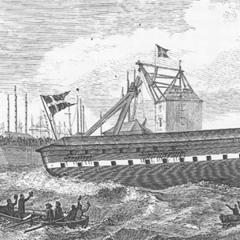
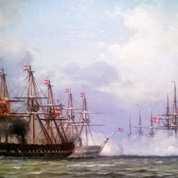
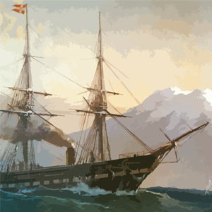
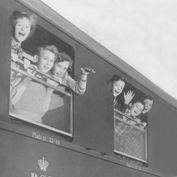
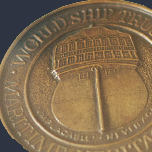
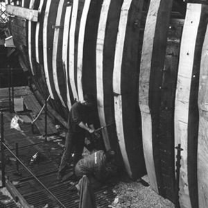
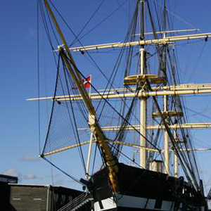

Fregatten Jylland var den sidste af tre skruefregatter af den såkaldte Niels Juel klasse. Som den eneste af de tre var den født med dampmaskine. Maskinen kunne bringe hastigheden op på 11 knob, mens den ved sejlføring og med ophejst skrue kunne præstere 15 knob. Dermed var det flådens hurtigste skib og samtidig var den sine sejlførende fjender overlegen, da den kunne manøvrere for maskinkraft uden hensyntagen til vindforhold.
Første standerhejsning på den 71 meter lange fregat med en besætning på 437 mand, fandt sted 15. maj 1862, hvorefter den drog ud på kadettogt. Togtet gik til Østersøen, Nordsøen, Færøerne og ikke mindst London, hvor den var med til at repræsentere Danmark ved Verdensudstillingen.


Fregattens konstruktion med det slanke skrog og deraf følgende hurtighed og manøvredygtighed samt svære armering gjorde den til en effektiv krigsmaskine. 9. maj 1864, skriver Fregatten Jylland sig ind i historien som del af den danske eskadre, der anført af Fregatten Niels Juel og med deltagelse af korvetten Heimdal, udkæmpede slaget ved Helgoland.
Fjenden var de østrigske fregatter Schwarzenberg og Radetzky og de preussiske kanonbåde Basilisk og Blitz samt hjuldamperen Adler. Under det godt to timer lange slag blev der affyret i alt 611 skud fra Fregatten Jyllands 40 kanoner og 18 træfninger, der kostede 12 mand livet. Omkring kl. 16.00 er flagskibet Schwarzenberg, der har været danskernes foretrukne mål, ved at være mør.
Fjenden var de østrigske fregatter Schwarzenberg og Radetzky og de preussiske kanonbåde Basilisk og Blitz samt hjuldamperen Adler. Under det godt to timer lange slag blev der affyret i alt 611 skud fra Fregatten Jyllands 40 kanoner og 18 træfninger, der kostede 12 mand livet. Omkring kl. 16.00 er flagskibet Schwarzenberg, der har været danskernes foretrukne mål, ved at være mør.

Kong Christian IX benyttede normalt kongeskibet Slesvig, men den gamle hjuldamper havde en uvane med at rulle slemt i søen, så da 1000 års jubilæet på Island i 1874 kaldte på kongen, måtte man finde på et alternativ. Fregatten Jylland var det største og kraftigste skib i flåden og lå støt i søen, så i vinteren 1873-74 gik man i gang med en ombygning, der skulle gøre fregatten til et værdigt kongeskib.
Agterdækkets lille hytte blev forhøjet og udvidet frem til mesanmasten, vinduer blev sat i skibssiden og hermed blev der mulighed for at byde velkommen til nye og fornemme passagerer i de ny indrettede kongelige gemakker. Man etablerede også et vandkloset ombord, noget som på den tid var helt nyt og avanceret.
Agterdækkets lille hytte blev forhøjet og udvidet frem til mesanmasten, vinduer blev sat i skibssiden og hermed blev der mulighed for at byde velkommen til nye og fornemme passagerer i de ny indrettede kongelige gemakker. Man etablerede også et vandkloset ombord, noget som på den tid var helt nyt og avanceret.

For flere generationer af provinsbørn var de obligatoriske skoleudflugter til landets hovedstad for mange synonym med indkvartering på Fregatten Jylland. I 1925 var ’Komiteen til Fregatten Jyllands Bevarelse’ blevet stiftet og havde overtaget skibet. I de følgende år sættes arbejdsløse i gang med at renovere fregatten og fra 1936 til 1959 har tæt på 200.000 børn fundet logi og store sovesale under dæk. Foreningen ’Provinsbørns ferieophold i København’, der havde til formål at gengælde den gæstfrihed Københavnerbørnene mødte ved ophold i provinsen, stod i lang tid bag det praktiske omkring overnatningerne. I 1937 alene overnattede 10.000 børn på det flydende hotel, der blev flyttet lidt rundt gennem årene, men i sommerperioden blandt andet fandt kajplads ved Knippelsbro og Langebro.

World Ship Trust medaljen er verdens mest fornemme hædersbevisning til historiske skibe. Til dato er der uddelt 30 medaljer over hele kloden. Medaljen kan kun overrækkes til statsoverhoveder for stater, som har bevaret skibe som tilhørerverdens maritime kulturarv. Den 3. april 1985 fik Dronning Margrethe på Fregatten Jyllands vegne overrakt medalje nr. 4. Hun overgav den til Fregatten Jyllands protektor, Prinsgemal Henrik.
Fregatten Jyllands World Ship Trust medalje er venligst udlånt af Kongehuset.
Ved vintereftersynet i 1947 på Orlogsværftet måtte det hæderkronede gamle skib endda lide den tort at kæntre på grund af en åben ventil.
Fregatten Jyllands World Ship Trust medalje er venligst udlånt af Kongehuset.
Ved vintereftersynet i 1947 på Orlogsværftet måtte det hæderkronede gamle skib endda lide den tort at kæntre på grund af en åben ventil.

Efter en omskiftelig tilværelse, der bød på mange dødsdomme og mirakuløse redninger, kom Fregatten Jylland i 1960 til Ebeltoft. 74 år efter den på et af sine sidste togter havde besøgt byen, kunne den gamle krigsveteran atter ses i vigen. Det var dog en noget bedaget dame, der fandt plads ved molen i Ebeltoft. Rigningen manglede og hele skibet var i meget dårlig stand. Alligevel skulle der gå godt 25 år inden planlægning og de første tiltag til restaurering for alvor kom i gang. Med stor hjælp fra Mærsk Mc-Kinney Møller og en landsindsamling sættes der fart på i 1989. 700 store danske egetræer kom til at udgøre de godt 60% af trækonstruktionen, der ikke kunne genbruges, og meget nytænkning og flere specialprocesser måtte udvikles for at gendanne fordoms storhed.

Om en bestemt konstruktion kan kalde sig ’verdens længste træskib’ afhænger af, hvad man betragter som en ren træskibkonstruktion, hvordan man foretager målingerne, og hvad man overhovedet betragter som værende et skib.
Der har tidligere været flere skibe bygget i træ, som var betragteligt længere – og nyere - end Fregatten Jylland, men deres holdbarhed har også vist sig meget kort, hvilket forklarer, hvorfor de ikke findes længere.
Verdens aktuelt længste træskib er ifølge Guinness Book of Records dhowen ’Al Hashemi II’ i Kuwait City, der måler 83,7 meter. Der er dog to problemer ved dette skib: Det er ikke bygget for at kunne sejle, men kun som en udsmykning til byens Radisson Blue Hotel.
Der har tidligere været flere skibe bygget i træ, som var betragteligt længere – og nyere - end Fregatten Jylland, men deres holdbarhed har også vist sig meget kort, hvilket forklarer, hvorfor de ikke findes længere.
Verdens aktuelt længste træskib er ifølge Guinness Book of Records dhowen ’Al Hashemi II’ i Kuwait City, der måler 83,7 meter. Der er dog to problemer ved dette skib: Det er ikke bygget for at kunne sejle, men kun som en udsmykning til byens Radisson Blue Hotel.